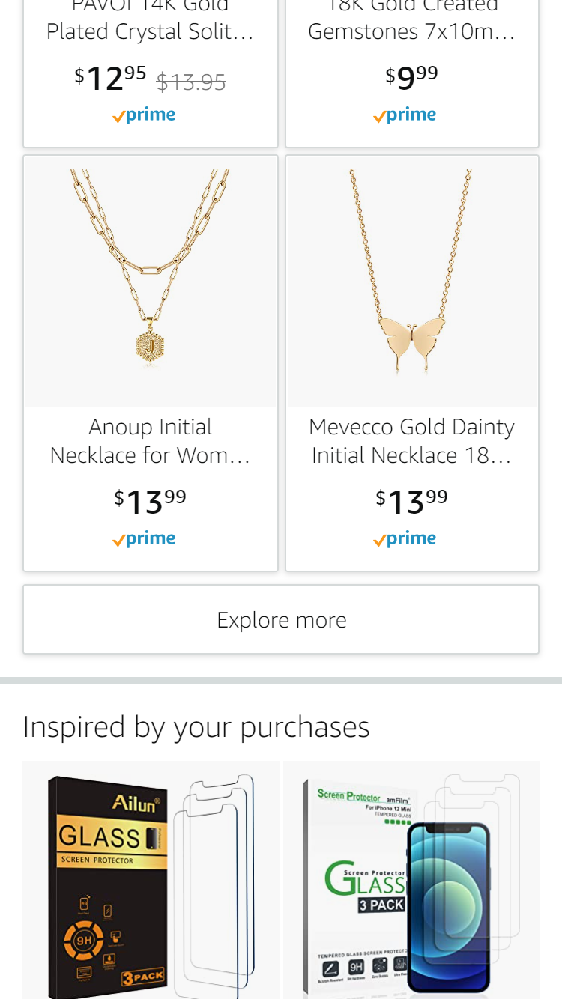
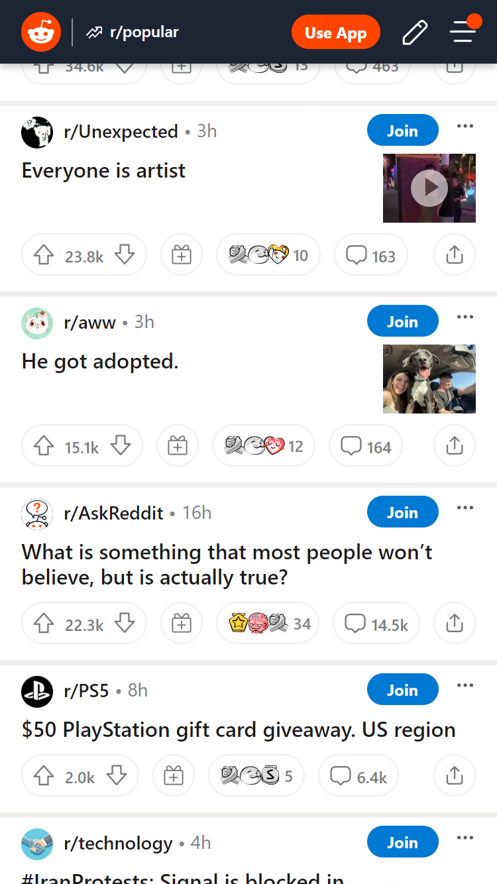

Lesson 2: Design Principles
Hick's Law
Company Name: Amazon
https://www.amazon.com/ This screenshot is an example of Hick's Law by providing fewer options. By providing only a few options the user does not have to take too much time to interpret and decide. As you would expect, the more stimuli to choose from, the longer it takes the user to decide on which one to interact with. Users bombarded with choices must take time to interpret and decide, giving them work they don't want.
PARC: Contrast
Company Name: Reddit
https://www.reddit.com/ This screenshot is an example of Contrast by providing an emphasis between different elements. In this example screenshot you can see the text is black on white which is a great start the also use a bright orange on a dark blue. The white on dark blue also provides great contrast and makes the overall readability better.
PARC: Proximity
Company Name: GAP
https://www.gap.com/
This screenshot is an example of Proximity by grouping together content of the same theme. On this screenshot you can see at the top "Gap Cash" then in the same box next to it steps on how it works. The same happens in the section about the good things GAP does.